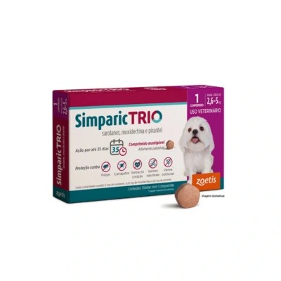

Antipulgas Simparic Trio 6 Mg para Cães

Preço: R$ 93,49
- Indicado para cães;
- Protege contra pulgas, carrapatos e vermes intestinais;
- Previne infecções por Dirofilaria immits (verme do coração) e por Angiostrongylus vasorum (verme pulmonar);
- Disponível em embalagem com 1 ou 3 comprimidos.